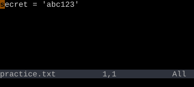
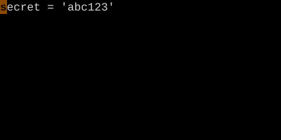

System Clipboard Registers
"+ and "* — bridge to the OS clipboard.
"+ is the system clipboard. "* is the X11 selection (Linux) or another alias for the clipboard. Yank into them, paste from them, or set 'clipboard' to make Vim use them by default.
If you want text from Vim to land in your system clipboard — or vice versa — use "+. "+yy yanks a line into the clipboard. "+p pastes from it.
| Key | Note |
|---|---|
| " | |
| + | |
| y | |
| y |
| Key | Note |
|---|---|
| " | |
| + | |
| p |
Worked example — "+y and "+p
Cross-application copy/paste.


"+ writes to the system clipboard. Now Ctrl-V in your browser pastes the line.
See also: Registers, The Unnamed Register